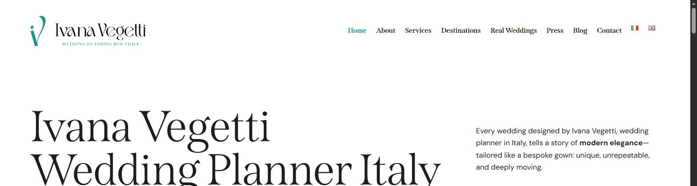

A homepage built entirely on artistry and emotion. Three client testimonials that praise something else almost completely — honesty, directness, someone who won’t give you a generic answer. That gap is the whole job.
Reviewed 18 September 2026 · Scope: homepage, About, and published client testimonials at ivanavegetti.it — the same material a Positioning Audit client would hand over on day one. No interviews, no private information, nothing beyond what’s public.
I picked Ivana Vegetti’s studio and this specific gap on my own initiative — no engagement, no affiliation, nothing commissioned, and nothing here uses anything beyond what’s publicly visible on her site today. It exists to show how I’d approach a Brand Strategy Core project, not to claim I was hired for one. If Ivana Vegetti would rather this page not exist, email me and it comes down — no argument.
Aesthetic execution is genuinely strong — the photography, the copy rhythm, the overall polish are all well above what a boutique studio typically manages alone. The gap isn’t craft. It’s that the strongest asset in the brand — what clients actually say about working with her — never makes it into the words she’s chosen for herself.

“Modern elegance,” “bespoke gown,” “an emotion, a journey, a promise.” Aesthetic, aspirational, unattached to a specific person’s experience.
“Honest, and direct.” “Found the right compromises.” “Respecting our taste, with remarkable professionalism.” Grounded, trust-focused, about judgment under pressure.
Nobody being married by Ivana Vegetti came back talking about “emotion” or “journey.” They came back talking about trust, judgment, and being told the truth. That’s a real asset — three separate people volunteered a version of the same trait without being prompted — and right now it’s buried under language that could belong to almost any luxury wedding studio in Italy. A prospective client reading the homepage has no way of knowing that trait exists until they’re already a client.
This is where the paid package stops being theoretical. Below is a genuine first pass at four pieces of a Brand Strategy Core — unsolicited, unpolished by client input or stakeholder interviews, and exactly the kind of thing a working session would sharpen.
“The wedding planner who won’t tell you what you want to hear — only what actually works, and then makes it beautiful.”
This keeps the artistry Ivana clearly delivers, but leads with the trait three separate clients volunteered without being asked: she’s direct. That’s a harder thing for a competitor to copy than “bespoke” or “tailored,” because it can’t be claimed — it has to be demonstrated on every call.
Her published “Real Weddings” portfolio and press features (Elle Spose, Lovenozze, The Real Wedding) put her squarely in front of couples who’ve already shortlisted 3–4 planners on aesthetics alone — the photos got them this far. At that stage, aesthetics are table stakes, not a differentiator. What breaks the tie is the thing the testimonials show and the homepage doesn’t: proof that she’ll say no to a bad idea before it costs them money. Right now that proof is one click away, on a separate page, in small type.
For couples booking Full Planning — lead with judgment: “You’re not hiring someone to say yes to everything. You’re hiring someone who’ll tell you when an idea won’t work — before it costs you money to find out.”
For couples booking Day-of Coordination — lead with trust under pressure: “The day only goes wrong when no one in the room is willing to make a call. That’s the job.”
Don’t: “Every wedding is a unique journey of beauty and emotion.” — true of every wedding planner’s homepage, provable by no one.
Do: “I’ll tell you if the venue you love won’t work for 140 guests. That’s what you’re actually paying for.” — specific, checkable, and it’s the thing her own clients say made the difference.
A real Brand Strategy Core starts with up to three stakeholder interviews and a written competitive scan against named competitors — neither happened here, because this is unsolicited work built only from what’s already public. The positioning statement and messaging above are a plausible first draft, not a final answer; the paid version is where they get pressure-tested against what Ivana actually wants the studio to become next.